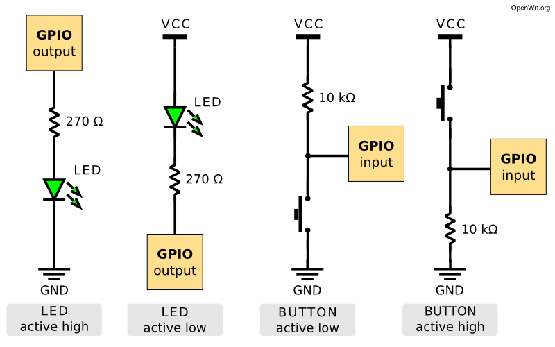
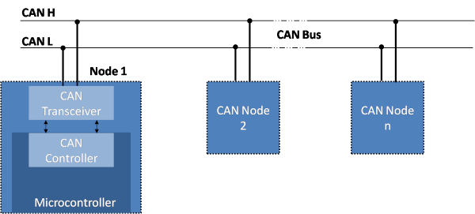
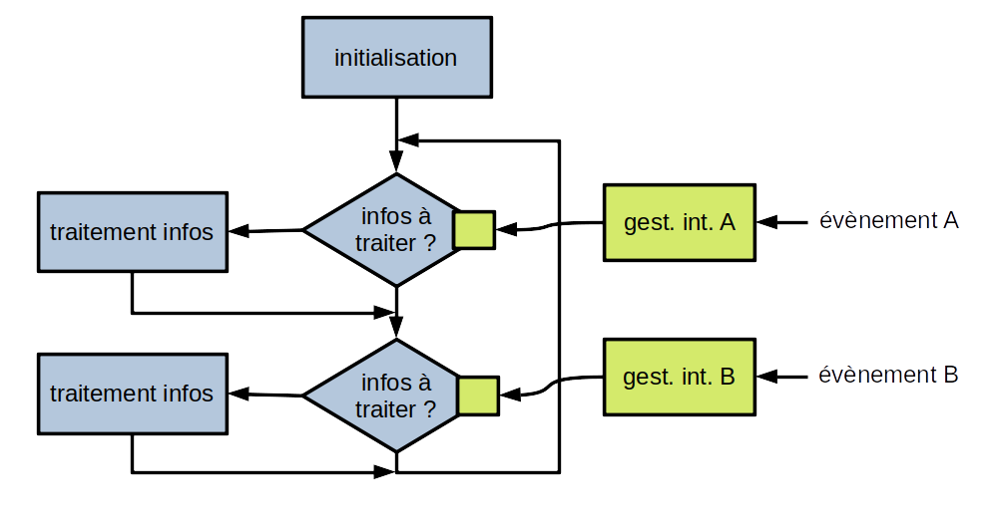
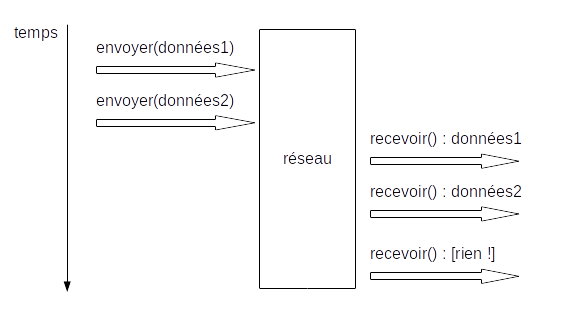

IoT et Objets Connectés
Pascal Bodin
Historique du document
| Quand | Quoi |
|---|---|
| 02/02/2021 | ajout de Z-Wave LR |
| 18/01/2021 | quelques améliorations |
| 13/12/2020 | quelques précisions - liens sommaire |
| 30/11/2020 | réseaux mobiles ⇒ réseaux mobiles terrestres |
| 25/11/2020 | correction de fautes de frappe (merci à Rémi J.) |
| 22/11/2020 | version 1.0 |
Licence

Cette présentation est mise à disposition selon les termes de la Licence Creative Commons Attribution - Pas d’Utilisation Commerciale - Partage dans les Mêmes Conditions 4.0 International.
Crédits
- reveal.js - Copyright (C) 2020 Hakim El Hattab
- Freepik from www.flaticon.com
- material.io
Sommaire
Avant-propos
Introduction
Exemple fil rouge
Equipement connecté
Positionnement
Communications
Architecture
Sécurité
Gestion de projets
Conclusion
Avant-propos
Qui suis-je ?
- 50% consultant indépendant - équipements connectés
- 50% ingénieur logiciel sénior salarié
- premier projet équipements connectés en 1990
Plus d'information
Point de vue de l'intégrateur
- livrer à une date donnée, pour un budget donné
- livrer un système qui fonctionne
- parfois : intégrer un système pré-existant
- réaliser un système maintenable
- cible : satisfaction du client
- résoudre des problèmes techniques est seulement un moyen
Type de systèmes ?
- systèmes grand public
- systèmes métiers
systèmes grand public- systèmes métiers
Systèmes métiers :
- richesse fonctionnelle
- complexité technique
- plus de contraintes (temps réel, sécurité, maintenabilité, etc.)
franglais
- dans la mesure du possible : utilisation du français
- si le mot français n'est jamais utilisé : mot anglais
Introduction
(Très rapide) historique
Avant les années 90

SCADA (Supervisory Control And Data Acquisition)
Années 90

M2M (Machine to Machine) LBS (Location Based Services)
Années 2000

IoT (Internet of Things)
Années 2010
- Smart Agriculture
- Smart City
- Smart Environment
- Smart Health
- Smart Industry
- Smart Utilities
- ...
Une définition ?
L'Internet des objets ou IdO (en anglais (the) Internet of Things ou IoT) est l'interconnexion entre l'Internet et des objets, des lieux et des environnements physiques.
L'objet de cette présentation
les systèmes dans lesquels des objets sont connectés à des applications distantes
⇒ plus large que la définition ci-dessus
Inventeur de l'acronyme IoT
Kevin Ashton - 1999
A retenir
- pas de vraie définition - domaine trop vaste
- systèmes existants bien avant l'acronyme IoT
- grande diversité des besoins utilisateurs
- différents domaines techniques
Exemple fil rouge
Les besoins exprimés
- surveiller un convoi de 5 véhicules traversant l'Europe
- émission d'une alarme quand :
- la distance entre deux véhicules consécutifs devient trop grande
- un conducteur appuie sur un bouton d'urgence
- sur déclenchement d'alarme :
- indication de l'origine de l'alarme au centre de supervision
- affichage en temps réel des positions de chaque véhicule jusqu'à la fin de l'alarme
- lever de doute en audio
- la couverture en extérieur doit être globale

Questions sur les besoins
- ordre de grandeur de la distance inter-véhicule ?
- cette distance limite doit-elle pouvoir être modifiée ?
- quelle précision ?
- comment sont gérées les contraintes du trafic ?
- délai de réception de l'alarme ?
- procédure d'arrêt de l'alarme ?
- installation et alimentation des équipements internes ?
- limitations sur les équipements externes (antennes) ?
- etc.
Les domaines techniques
- distance entre véhicules : capteurs, GNSS...
- déclenchement manuel alarme : capteur
- transmission alarme : réseaux sans-fil
- équipements embarqués
- affichage positions : GNSS, SIG...
- couverture globale : réseau mobile terrestre, satellite...
- confidentialité, intégrité, disponibilité
- logiciel
- etc.
La gestion de projet
- beaucoup de cas d'usages
- besoins encore souvent mal exprimés
- plusieurs domaines techniques
nous allons voir en détails tous ces éléments...
Equipement connecté
Notre exemple
- gérer les capteurs : alarme, distance, position...
- gérer les moyens de communication
- gérer la sécurité
- gérer les aspects métier
- etc.
De façon générale :
- pouvoir s'interfacer avec des périphériques
- effectuer des traitements
⇒ un ordinateur !
Vocabulaire utilisé :
- objet connecté = le camion de notre exemple
- équipement connecté = l'élément électronique communiquant installé dans le camion
Evolution du matériel
1985 - l'ordinateur le plus puissant du monde

Cray-2
- 1,9 GFLOPS (giga floating-point operations per second)
- 38 millions US$ (coût ramené à 2020)
2020 - iPhone 11

- 155 GFLOPS
- 850 US$
En 35 ans :
- puissance multipliée par 70 (environ)
- coût divisé par 38000
Que nous réservent les années à venir ?!
Mémoire, puissance de traitement et applications
1969 - l'ordinateur qui a permis d'aller sur la Lune

- masse : environ 32 kg (hors interface utilisateur)
- alimentation : 28 V CC - 70 W
- mémoire permanente : 36 Kmots
- mémoire effaçable : 2 Kmots
- horloge : 1 MHz (83 kHz de temps de cycle instruction)
- système d'exploitation simple, avec gestion de priorité
Comparé aux configurations actuelles :
- très peu de mémoire
- très peu de puissance de traitement
et pourtant, cela a permis d'amener des humains sur la Lune
Un développeur logiciel embarqué fait beaucoup avec peu 🙂
Architecture d'un équipement connecté

- microcontrôleur
- communication
- interfaçage avec des périphériques externes (capteurs, actionneurs)
- optionnellement :
- gestion alimentation (batterie...)
- positionnement
- interface utilisateur
- périphériques (capteurs...)
- stockage de données
- non représenté sur le schéma : mémoire additionnelle éventuelle, externe au microcontrôleur
Rappel : architecture d'un ordinateur

Microcontrôleur
- un ordinateur dans une puce :
- unité centrale
- mémoire morte (mémoire Flash)
- mémoire vive (RAM - Random Access Memory)
- périphériques :
- E/S analogiques
- E/S numériques
- timers
- liaison(s) série
- bus série
- chien de garde
- etc.
- mémoire Flash : inventée en fin des années 80
- auparavant :
- ROM - Read-Only Memory
- PROM - Programmable Read-Only Memory
- EPROM - Erasable Programmable Read-Only Memory
- EEPROM/EE2PROM - Electrically Erasable Programmable Read-Only Memory
- ROM : terme utilisé également pour mémoire Flash
Exemple d'architecture de microcontrôleur


Mémoire [carte] microcontrôleur
Chargement / amorçage
- ordinateur : amorçage (du code en ROM lance du code sur disque qui lance le sysème d'exploitation)
- carte microcontrôleur : chargement (optionnel - permet une mise à jour logicielle simple)
Caractéristiques importantes ?
- dépendent de l'application !
- exemple :
- élément sécurisé
- chiffrement par le matériel
- blocs analogiques
- temps de cycle instruction
- mémoire (quantité, type, extensible...)
- taille registres (8/16/32 bits)
- RISC/CISC
- etc.
Outils matériels
- cartes de développement
- programmeur, débogueur
- schémas en usage libre
Outils logiciels
- chaîne de développement croisé (toolchain)
- environnement de développement intégré (IDE)
- logiciel en usage libre
Support
- support payant
- communauté active (forums, exemples...)
Exemple de microcontrôleur
STM32L073RZ
- taille registres : 32 bits
- Flash : 192 Ko - RAM : 20 Ko
- horloge : 32 MHz
- périphériques : voir schéma architecture
- prix : US$ 5.26 (1) - US$ 2.17 (10000)
Carte de développement

US$ 13
Environnement Intégré de Développement (IDE)
- gratuit, basé sur Eclipse
- configuration du microcontrôleur
- développement, programmation, débogage
- paquets d'extension
Périphériques
Capteurs
- pression
- température
- niveau de lumière
- champ magnétique
- flux gazeux
- inclinaison
- accélération
- contact
- etc.
Actionneurs
- relais
- moteur
- moteur pas-à-pas
- servomoteur
- etc.
Autres équipements
- imprimante
- afficheur
- connecteur OBD (On-Board Diagnostics)
- lecteur d'étiquette RFID
- etc. etc. etc.
Interfaçage
GPIO (General Purpose digital Input Output)
Souvent nécessaire d'ajouter :
- optocoupleur
- relais
- etc.
Dans notre exemple :
- bouton d'alarme (E)
- contact ouverture de porte (E)
- signalement d'une alarme en cours (LED) (S)
- etc.
Conversion analogique / numérique (CAN - ADC)
- passage d'une valeur continue à une valeur discrète
- résolution : nombre de valeurs discrètes, ou nombre de bits utilisés pour le codage
- fréquence d'échantillonnage : nombre de mesures par seconde
- il peut être nécessaire d'amplifier le signal
- amplificateurs opérationnels intégrés dans certains microcontrôleurs (PIC16F527, PSoC 4, etc.)
Dans notre exemple :
- mesure de distance
- etc.
Conversion numérique / analogique (CNA - DAC)
Dans notre exemple
- modulation sirène
- etc.
Liaison série
- au moins 3 fils : Transmit, Receive, Ground
- autres fils possibles : Request to send, Ready for sending, etc.
- définition des fils : V.24 (RS232 aux USA)
niveaux électriques :
- V.28 et RS232 : -15 V à -3 V et +3 V à +15 V
- 0 et 5 V
- 0 et 3,3 V
- distance (V.28 et RS232) : < 15 m
- débit maximum : 20 kb/s (selon V.28)
- sur distances courtes : 115 kb/s ou plus
Connecteurs V.28 et RS232 : D-subminiature DB9 ou DB25


Pour les ordinateurs actuels, adaptateurs série-USB


Transfert des données :

Important :
- chaque côté doit être configuré de la même façon (vitesse, parité, etc.)
Dans notre exemple :
- contrôle des émetteurs/récepteurs
- contrôle d'un récepteur de positionnement par satellite
- etc.
SPI (Serial Peripheral Interface)

- communication synchrone : horloge et données
- maître / esclave
- 4 fils :
- horloge
- données, du maître à l'esclave
- données, de l'esclave au maître
- sélection de l'esclave
- bidirectionnel simultané

- côté maître : un fil de sélection par esclave
- possibilité d'utiliser un décodeur, ou de chaîner les esclaves
- débit maximum : quelques Mb/s
- distance maximale : quelques dizaines de cm
Dans notre exemple :
- afficheur
- etc.
I2C (Inter-Integrated Circuit)
- communication synchrone : horloge et données
- multi-maîtres
- 2 fils :
- horloge
- données
- bidirectionnel alterné
- un maître peut savoir si un autre maître communique => arbitrage
Ecriture :

Lecture :

- débit maximum : quelques Mb/s
- distance maximale : quelques dizaines de cm
CAN (Controller Area Network)
- créé pour les véhicules
- multi-maître
- accès au bus : CSMA/CD+AMP (Carrier Sense Multiple Access / Collision Detection with Arbitration on Message Priority)
- débit maximum : 1 Mb/s
- distance maximale : quelques centaines de m (à bas débit)
Radio
Voir section Communications
Développement logiciel
Développement croisé

Sur ordinateur :
- édition du code source
- construction (compilation + édition de liens) croisée
- émulation + débogage
Ordinateur + carte microcontrôleur :
- programmation (flash)
- débogage
- chaque fabricant de microcontrôleur : environnement de développement complet
- souvent gratuit
- souvent basé sur des logiciels libres et gratuits (Eclipse, gcc, etc.)
Environnements d'exécution
Systèmes d'exploitation (Operating System - OS)
- principalement : Linux
- comme pour un ordinateur de bureau :
- gestionnaire de paquets (package manager)
- interface utilisateur graphique possible
Mémoire minimale nécessaire :
- RAM : quelques Mo ou quelques dizaines de Mo
- dépend bien sûr des applications
Habituellement :
- RAM : 512 Mo à 8 Go
- carte Flash : 1 Go à 8 Go
- normalement, Linux nécessite une MMU (Memory Management Unit)
- le noyau peut être configuré pour fonctionner sans MMU
- grâce au projet μClinux
- attention à la compatibilité des applications

- Yocto : création de distributions Linux
- balenaOS : conteneurs Docker
- LYNX MOSA.ic : hyperviseur
Ce type d'environnement est destiné à des cartes plus proches d'une carte-mère d'ordinateur que d'une carte microcontrôleur
Système d'Exploitation Temps Réel (RTOS)
- permet un temps de réponse déterministe
- utilise très peu de mémoire
- pas d'ajout d'application "à chaud", il faut tout reconstruire
Mémoire minimale nécessaire :
- RAM : quelques Ko
- Flash : quelques Ko
- dépend bien sûr de l'application

- FreeRTOS acheté par Amazon
- ThreadX acheté par Microsoft
- Google et Facebook supportent Zephyr
Services disponibles :
- fil d'exécution (thread) / tâche (task)
- synchronisation et communication :
- messages et files (queues)
- sémaphores
- groupe d'événements
- etc.
- compteur de temps (timer)
- allocation mémoire
- etc.
Analogue à ce que fournit un OS
Bare metal
- pas d'OS, pas de RTOS, directement sur le microcontrôleur
- il peut y avoir une couche d'abstraction :
- ⇒ compatibilité microcontrôleurs même famille
- Arm : CMSIS
- ST : HAL, LL
- etc.
Chaque périphérique peut générer une interruption (du programme en cours) pour signaler un événement :
- liaison série :
- réception d'octets
- fin d'émission d'octets
- etc.
- GPIO :
- entrée passant de 0 à 1 ou de 1 à 0
- compteur de temps :
- atteinte d'une durée
- etc.
Le développeur spécifie pour chaque type d'interruption la fonction à appeler
- ISR : Interrupt Service Routine - écrite par le développeur
- doivent être courtes
- enregistrent l'information de l'événement, pour une boucle de traitement
- la boucle (tâche de fond) traite ces informations
Analogie : traitement d'appels téléphoniques selon l'importance de l'appelant
- une liste fournit l'importance de chaque appelant :
- important - à rappeler immédiatement
- normal - à rappeler dès que possible
- une liste contient les appels importants, dans l'ordre d'appel, qui n'ont pas pu être traités
- une liste contient les appels normaux, dans l'ordre d'appel, qui n'ont pas pu être traités
- réception d'un appel téléphonique si aucun appel en cours : noter le numéro et rappeler
- réception d'un appel téléphonique si appel en cours :
- si appel en cours normal et appel important : raccrocher et rappeler
- si appel en cours normal et appel normal : ajouter le numéro appelant à la liste des appels normaux
- si appel en cours important et appel important : ajouter le numéro appelant la liste des appels importants
- si appel en cours important et appel normal : ajouter le numéro appelant à la liste des appels normaux
- sur raccroché :
- si liste des appels importants non vide, appeler le premier
- sinon, si liste des appels normaux non vide, appeler le premier
- sinon, commencer une sieste
Questions :
- qu'arrive-t-il à l'appel normal interrompu par un appel important ?
- qu'arrive-t-il aux appels normaux si un appel important arrive systématiquement pendant un appel en cours ?
Réponses :
- la fin de l'appel est perdue
- les appels normaux ne sont plus traités

Plus détaillé :
- pas forcément une tâche par interruption
- la gestion des priorités peut être complexe
- si peu d'événements, la tâche de fond a peu à faire (sauf si certains évènements demandent un traitement lourd)

- la mise en sommeil est importante pour les équipements autonomes
- plusieurs types de sommeils possibles
- la partie générant les événements doit rester active
Notre exemple
- quel équipement choisir ?
- puissance de traitement
- mémoire
- interfaces
- périphériques
- logiciel ?
- OS / RTOS / bare metal
- mise à jour à distance
- tout le reste...
- nécessaire d'avoir des informations détaillées
- sur les périphériques à gérer
- sur les fonctions métier à mettre en place
- conserver une marge de manœuvre
- attention : réduire le coût de l'équipement et des périphériques peut coûter très cher (voir plus loin)
A retenir
- équipement embarqué : domaine complexe
- mélange électronique analogique, électronique numérique et informatique
- développement logiciel : très spécifique
- progression rapide du matériel
- longue durée de vie des systèmes
- progression lente du logiciel
- importance croissante du libre (matériel et logiciel)
- la communication ajoute de la complexité : voir la suite
Positionnement
Notre exemple
- position sur alarme
- distance entre deux véhicules :
- position de chaque véhicule
- échange des positions
- calcul de la distance
- question : quelle précision ?
GNSS (Global Navigation Satellite System)

Principe :
- constellation de satellites
- chaque satellite émet des messages
- récepteur en écoute, à l'endroit dont on doit connaître la position
- messages contenant heure et position satellite
- heure satellite très précise (horloge atomique)
- avec 3 satellites : estimation position
- avec 4ème satellite : synchro horloge récepteur
- ⇒ position
- durée / distance : 1 m ⇔ 3,3 ns
- sources d'erreurs :
- position satellite : 2,5 m
- horloge satellite : 1,5 m
- perturbations atmosphère : 6 m
- la plus importante : trajets multiples (réflexions signaux satellites - canyons urbains)
Exemple exactitude Galileo

Les constellations
- GPS :
- USA
- démarré en 1973, opérationnel en 1993
- 30 satellites opérationnels en septembre 2020
- orbites : 20200 km (MEO)
- GLONASS :
- Russie
- démarré en 1976, opérationnel en 1995
- 24 satellites opérationnels en octobre 2020
- orbites : 19100 km (MEO)
- Galileo :
- Europe
- démarré en 1999, opérationnel en 2016
- 24 satellites opérationnels en octobre 2020
- orbites : 23200 km (MEO)
- BeiDou (北斗) :
- Chine
- démarré en 2000, opérationnel en 2020
- 30 satellites lancés de 2017 à 2020
- orbites : MEO, GEO et GSO
- NavIC :
- Inde
- système régional
- 8 satellites opérationnels en 2020
- orbites : GEO et GSO
- QZSS :
- Japon
- système régional
- 4 satellites opérationnels en septembre 2020
- orbites : QZO
Exactitude : exemple concret
Conditions :
- récepteur GPS + GLONASS de téléphone
- en 2017
- en intérieur, rez-de-chaussée, à 2 m d'une fenêtre
- une position toutes les 2 s pendant 15 min
- ⇒ plusieurs positions à plus de 60 m de la vraie position
Augmentation de l'exactitude
- diffusion de corrections au niveau régional

Diminution du temps d'acquisition
- temps d'acquisition de la première position (TTFF : Time To First Fix) peut être long
- pour le réduire : fourniture des almanacs et éphémérides au récepteur GNSS
- ces informations doivent être fournies à l'équipement
- terme historique : A-GPS (Assisted GPS)
Interfaçage avec un récepteur GNSS
- niveau physique : liaison série (tension carte ou V.28)
- niveau données :
- NMEA 0183 - non prévu initialement pour GNSS
- très souvent : protocoles propriétaires optimisés

Protocoles propriétaires :
- SiRF (Qualcomm)
- u-blox
- SkyTraq
- etc.
- la plupart des récepteurs sont multi-constellations
- qualité et placement de l'antenne importants
- facile de dégrader la réception
Positionnement par infrastructure fixe
- trilatération : plusieurs mesures de distances par mesures de temps (comme GNSS)
- triangulation : plusieurs mesures d'angles
- zone de l'antenne de réception ("cellule")
- balises (beacons) pour détection de proximité
Navigation à l'estime (dead reckoning)
- position initiale connue
- suivi précis du trajet par capteurs (gyroscope, accéléromètre, magnétomètre...)
- filtrage et fusion des données des capteurs
- resynchronisation périodique
En intérieur
- les technologies présentées peuvent fonctionner (plus ou moins bien) en intérieur
- installation d'infrastructure souvent nécessaire
Notre exemple
- a priori, alimentation électrique disponible dans les véhicules
- ⇒ pas de contrainte liée à l'autonomie
- calcul de distance entre véhicules semble pouvoir reposer sur du GNSS
- où positionner l'antenne GNSS ? comment passer le câble ?
A retenir
- GNSS, pas GPS 🙂
- la précision augmente
- le temps d'acquisition diminue
- la consommation d'énergie diminue
- mais encore difficile aujourd'hui de positionner tout le temps et partout
- ne pas confondre positionner et localiser (sous-entendu : à distance)
Communications
Notre exemple
- transmettre une alarme vers le centre de supervision
- lever de doute en audio
- suivi temps réel
- couverture globale
- communications entre véhicules
Préambule
- certaines des informations qui suivent ne concernent que l'Europe, voire que la France
- l'équivalent existe dans le reste du monde, avec variations en techno et en réglementation
Réseaux mobiles terrestres
Vue d'ensemble
- 1G : années 80 - réseaux analogiques
- 2G : années 90 - passage au numérique
- voix, données, SMS
- GSM/GPRS, EDGE, CDMAOne, PDC, iDEN, IS-136, D-AMPS
- 3G : années 2000
- évolution GSM/GPRS, CDMA2000 1X/EVDO, UMTS-HSPA+
- 4G : années 2010
- LTE Advanced
- 5G : années 2020
- réseaux de communication partagés entre tous les utilisateurs
- peu (ou pas) de gestion de priorités
- les opérateurs visent à couvrir une population, pas un territoire
- impossible d'adapter la couverture à un besoin spécifique
- utilisent des bandes de fréquence soumises à autorisation
Services de données
SMS (Short Message Service)

- 140 octets, ou 160 caractères à 7 bits, ou 70 caractères UCS2
- concaténation possible
- pas d'acquittement de bout-en-bout
- latence : peut être très élevée (plusieurs heures)
- intérêt : envoi de données VERS un mobile
Données par paquets
- utilisation des protocoles de l'Internet (IP, TCP, UDP, etc.)
- des limitations peuvent exister, selon l'abonnement (protocoles, ports)
- 2G :
- GPRS (General Packet Radio Service) - 2,5G
- fermetures des réseaux déjà faites, en cours ou à venir
- 3G :
- zone rurale : au moins 144 kb/s - max 384 kb/s, max 500 km/h
- zone urbaine : au moins 384 kb/s - max 512 kb/s, max 120 km/h
- proche : au moins 2 Mb/s, max 10 km/h
- 4G :
- 100 Mb/s downlink, 50 Mb/s uplink
- optimisé pour les vitesses lentes, mais support vitesses rapides max 500 km/h
- services données historiquement prévus pour :
- échange de courriels
- visite de sites web
- visionnage ou transmission de vidéos
- besoins et contraintes spécifiques des équipements connectés :
- courts messages, peu fréquents
- souvent : autonomie en énergie
- souvent : bas coût
- en réponse à ces besoins : LPWAN (Low Power Wide Area Network)
- NB-IoT (Narrowband IoT)
- LTE-M (Long Term Evolution - Category M1) (LTE = 3G → 4G)
- autres technologies de LPWAN (hors réseaux mobiles terrestres) : voir plus loin

- PSM (Power Saving Mode) : diminution de la signalisation
- eDRX (Extended Discontinuous Reception) : extinction du récepteur une partie du temps
- HLCom (High Latency Communications) : tamponnage et signalisation pour PSM et eDRX
- Half Duplex Mode
- CE (Coverage Enhancement) : répétitions pour canaux données et contrôle
- etc.
- buts :
- 10 ans de fonctionnement sur pile
- terminal plus simple ⇒ coût plus faible
Caractéristiques
- débit : 1 Mb/s uplink et downlink
- latence : 10 ms à 4 s
- voix

- PSM (Power Saving Mode) : diminution de la signalisation
- eDRX (Extended Discontinuous Reception) : extinction du récepteur une partie du temps
- Coverage Extension : augmentation des niveaux de puissance et répétitions
- etc.
- buts :
- 10 ans de fonctionnement sur pile
- terminal plus simple ⇒ coût plus faible
Caractéristiques
- débit : jusqu'à 158 kb/s uplink et 124 kb/s downlink
- latence : 1,4 à 10 s
- pas de voix
Réseaux en activité (août 2020)
- LTE-M : 46 réseaux
- NB-IoT : 96 réseaux
- en France :
- LTE-M : Orange
- NB-IoT : SFR
Intégration d'un terminal réseau mobile
Deux grands types d'intégration :
- terminal séparé contrôlé par l'application
- le terminal embarque l'application
Terminal séparé
- niveau physique : liaison série (tension carte ou V.28)
- niveau données :
- "commandes AT"
- 3GPP TS 27.007
Format des commandes
Format des réponses

Commandes
- presque 300 commandes :
- gestion des appels voix
- gestion des services réseaux
- gestion des échanges de données
- informations sur le terminal
- etc.
- chaque fabricant ajoute ses propres commandes :
- GPIO
- système de gestion de fichiers
- sockets TCP et UDP
- FTP, HTTP, ping, CoAP, MQTT, LwM2M
- GNSS
- date et heure
- etc.
Modes de fonctionnement

- échange de données : nécessite l'activation d'un contexte PDP (Packet Data Protocol)
- sélection du réseau cible : APN (Access Point Name)
- Internet, intranet
- protocoles et ports autorisés
- etc.
Utilisation de PPP (Point to Point Protocol)

Utilisation d'une pile TCP/IP interne
Application dans le terminal/module
- souvent deux processeurs : "modem" et application
- API (Application Programming Interface) donnant accès aux services
- OS (Linux) ou RTOS (Thread-X, etc.)
Réseaux LPWAN en fréquences non soumises à autorisation
Certaines fréquences sont utilisables sans licence.
Réglementation
- recommandations internationales (ITU, CEPT, etc.)
- réglementations nationales
- concernent tous fréquences sous licence également
⇒ fréquences ISM (Industrial, Scientific and Medical)
- initialement assignées aux usages autres que télécommunications
- maintenant utilisées pour Wi-Fi, Bluetooth, Zigbee, etc.
- tolérance aux interférences requise
- 6,7 MHz - 13 MHz - 27 MHz - 40 MHz - 433 MHz - 915 MHz - 2,4 GHz - 5,8 GHz - 24 GHz - 61 GHz - 122 GHz - 245 GHz
⇒ SRD (Short Range Devices)
- faible capacité à provoquer des interférences avec autres équipements radio
- en cas d'interférence : non protégés par la réglementation
- utilisation des fréquences ISM et de fréquences additionnelles (868 MHz, etc.)
- limitation de la puissance : 1 à 500 mW e.r.p. selon fréquences
- éventuelle limitation temps d'émission (duty cycle) : 1% à 0,001% selon fréquences
Deux grands types de réseaux LPWAN
- réseau Sigfox
- réseaux utilisant la technologie LoRaWAN
Radio :
- transmission asynchrone du terminal vers le réseau
- message répété 3 fois sur 3 fréquences
- UNB (Ultra Narrow Band)
- modulations DBPSK (Differential Binary Phase Shift Keying) et GFSK (Gaussian Frequency Shift Keying)
- technologie propriétaire
- fréquences : 862 à 876 MHz, 902 à 928 MHz, selon régions
- largeur de bande : 100 Hz
- débit : 100 b/s ou 600 b/s, selon régions
Charge utile d'un message :
- uplink : 12 octets
- downlink : 8 octets
- limitation du nombre de messages par jour et par terminal
Couverture
- attention : carte de présence par pays, pas carte de couverture
Radio : LoRa
- étalement de spectre basé sur CSS (Chirp Spread Spectrum)
- correction d'erreur dans la couche physique
- technologie propriétaire
- largeur de bande :
- uplink : 125 kHz ou 500 kHz
- downlink : 500 kHz
- facteurs d'étalement orthogonaux
- débit adaptable aux conditions radio
- uplink : 980 b/s à 12500 b/s
- downlink : 980 b/s à 21900 b/s
LoRaWAN
- protocole de communication + architecture système
- ⇒ réseaux et terminaux LoRaWAN interopérables


Classes de terminaux
- classe A : communication initiée par l'équipement - puis deux fenêtres successives de réception
- classe B : classe A + fenêtres de réception périodiques synchronisées
- classe C : réception ouverte en permanence en-dehors des émissions
Charge utile
- 51 à 222 octets, selon débit
- le débit peut être adaptatif ⇒ taille charge utile variable
Réseaux

- attention : carte de présence par pays, pas carte de couverture
- 148 opérateurs dans 162 pays
- en France :
- Objenious (Bouygues Telecom)
- Orange
- réseaux communautaires :
- il est aussi possible d'installer son propre réseau
Réseaux satellitaires
Orbite géostationnaire (GEO - Geosynchronous Equatorial Orbit)
- 36000 km d'altitude
- semble fixe par rapport à la Terre
- couverture restreinte à la zone "sous" le satellite
- latence de bout en bout minimale : 2 x 36000 km / 300000 km/s ⇒ 240 ms

- BGAN M2M
- IP - jusqu'à 448 kb/s
- latence : > 800 ms
- couverture : presque globale
- IsatM2M
- messages de 10 ou 25 octets (TX) ou 100 octets (RX)
- latence : 30 à 60 s
- couverture : presque globale
- IsatDataPro
- message de 6400 octets (TX) ou 10000 octets (RX
- latence : 15 à 60 s
- couverture : presque globale

- différents services de données
- couverture : 2/3 du globe
Orbite basse (LEO - Low Earth Orbit)
- en-dessous de 2000 km d'altitude
- (rayon de la Terre : environ 6400 km)
- (ISS : entre 330 et 420 km d'altitude)
- période : de 80 à 130 min
- latence : souvent plus élevée (stockage et transfert...)
- puissance d'émission du terminal plus faible
Acteurs "anciens" :
Nouveaux acteurs :
Réseaux PMR (Professional/Private Mobile Radio)
Informations pour la France
Réseaux PMR :
- réseaux indépendants
- à destination des professionnels, de services de l'Etat, des hôpitaux, des collectivités locales, d'établissements publics
- la voix est la première fonction
- couverture locale ou régionale
- bandes de fréquences soumises à licence (payante) :
- 29-54 MHz
- 54-68 MHz
- 68-87 MHz
- 146-174 MHz
- 174-230 MHz
- 406-430 MHz
- 440-470 MHz
- gestion : Agence Nationale des Fréquences (ANFR)
Technologies
- il existe encore des réseaux analogiques (voix - données possibles)
- en numérique :
- (Digital Mobile Radio) :
- TDMA (Time Division Multiple Access) sur 12,5 kHz ou 6,25 kHz
- jusqu'à 9600 b/s débit brut
- messages courts et UDP/IP
- (Digital Private Mobile Radio) :
- FDMA (Frequency Division Multiple Access) sur 6,25 kHz
- jusqu'à 4800 b/s débit brut
- messages courts
- permettent :
- les échanges terminal à terminal
- le trunking (partage entre plusieurs groupes d'utilisateurs)
- (Digital Mobile Radio) :
FDMA - TDMA

En numérique (suite) :
- (TErrestrial Trunked RAdio) :
- pour réseaux partagés entre groupes d'utilisateurs (trunking)
- SDS (Short Data Service) - messages jusqu'à 256 octets
- messages de statut
- données en mode circuit
- données en mode paquets (IP) - maximum 14 Kb/s
- TEDS (TETRA Enhanced Data Service) : permet la vidéo
En numérique (suite) :
-
- pour réseaux partagés entre groupes d'utilisateurs (trunking)
- SMS (Short Message Service)
- messages de statut
- données en mode paquets (IP)
- réseaux peu connus du grand public mais très nombreux :
- en 2018, 25000 réseaux PMR en France
- conviennent aux applications à couverture locale ou régionale
- avantages :
- la couverture peut être adaptée à l'application
- utilisation exclusive des fréquences (hors trunking)
- protection légale contre les brouillages
Communications radio courte distance

- basé sur le standard IEEE 802.11
- réseau local sans fil (WLAN - Wireless Local Area Network)
- fréquences ISM : 2,4 GHz et 5,8 GHz
- 802.11g : jusqu'à 54 Mb/s - standards ultérieurs permettent plus
- portée : environ 100 m
- récemment, Wi-Fi HaLow (802.11ah) pour l'IoT :
- fréquences ISM : 915 MHz
- portée : environ 1 km
- bonne pénétration dans les bâtiments (bande étroite)
- faible consommation

- fréquences ISM : 2,4 GHz
- deux modes radio :
- LE (Low Energy) - jusqu'à 2 Mb/s - point à point, diffusion, maillage
- Classic - jusqu'à 3 Mb/s - point à point
- portée : More than a kilometer. Less than a meter. - attention à la réglementation !

- fréquences ISM : 2,4 GHz et 868 MHz en Europe, 915 MHz aux USA
- réseau maillé auto-organisé
- plusieurs centaines de nœuds sur un même réseau
- type de nœuds : coordinateur, routeur, équipement terminal
- débit : 250 kb/s
- portée : 300 m en vue directe, 75 à 100 m en intérieur
- faible consommation

- fréquences SRD/ISM : 868 MHz en Europe, 915 MHz aux USA
- réseau maillé
- jusqu'à 232 nœuds sur un même réseau
- débit : jusqu'à 100 kb/s
- portée : 100 m en vue directe
- faible consommation
Z-Wave Long Range
- annoncé en décembre 2020
- devrait permettre des distances de plusieurs km
- devrait supporter jusqu'à 4000 nœuds sur un même réseau
Protocole propriétaire spécifique
- vous pouvez développer votre propre protocole, ou utiliser un protocole propriétaire existant
- vous devez respecter la réglementation locale
Notre exemple
- couverture globale ⇒ réseaux satellitaires
- temps de latence court pour transmission alarme ⇒ constellation GEO
- pour encore diminuer le temps de latence : réseaux mobiles 3G/4G lorsque disponibles
- échange des positions entre véhicules pour calcul distance :
- communications courte distance
- au moins deux bandes de fréquences pour lutter contre brouillage
- protocole propriétaire pour sécurité
A retenir
- différencier standard ou norme / technologie radio / réglementation / opérateur :
- une technologie peut être utilisée sur des fréquences différentes (ex.: réseaux 4G privés)
- un standard ou norme peut proposer des services qui ne seront pas mis en place par un opérateur donné
- une même techno peut être proposée par plusieurs opérateurs
- les fréquences ISM/SRD vont-elles saturer un jour ?
- il est possible d'installer et de gérer son propre réseau (PMR)
- il peut être nécessaire d'intégrer plusieurs technologies
- attention : avec la radio, la perte de données est certaine
Echanges de données
Flux ou messages ?
- capteurs : quelques (dizaines d')octets
- valeur mesurée
- identifiant
- date et heure
- position
- etc.
- actionneurs : quelques (dizaines d')octets
- commande à exécuter
- identifiant
- etc.
- ⇒ messages
- voix : flux
- vidéo : flux
- images : (gros) messages
Nous allons nous intéresser aux messages. La transmission de la voix ou de la vidéo est plus rare, bien que parfois nécessaire (comme dans notre exemple).
Pourquoi des messages ?
- l'application destinataire doit savoir quand toute l'information relative à une mesure d'un capteur a été reçue
- un actionneur doit savoir quand toute l'information relative à la commande qu'il doit effectuer a été reçue
Qu'est-ce qu'un message ?
- une suite d'octets contenant la totalité de l'information nécessaire à un traitement donné
Technologies avec interfaces de type message
- UDP/IP
- SMS (réseaux mobiles terrestres)
- LoRaWAN, Sigfox
- messages sur réseaux satellitaires
- messages sur réseaux PMR
- etc.
Interface de type message
Interface de type flux
Attention !
TCP/IP est de type flux !
Retour à la liaison série
- comment étaient construits les messages d'un récepteur GNSS ?
- comment étaient construites les commandes AT et les réponses ?
- ⇒ utilisation de délimiteurs (début, fin)
Solutions générales pour un cas simple
- on suppose :
- pas d'erreur (perte, modification)
- transmission des données respectant l'ordre
- solution 1 : le temps
- attendre une durée minimale entre deux messages
- durée entre deux octets successifs d'un même message doit être inférieure à la durée entre messages
- la durée entre deux messages doit être supérieure à la gigue du réseau
- solution 2 : une délimitation
- séquence de début spécifique
Transparence
- supposons que l'on utilise la solution 2, avec l'octet de valeur 01 comme délimiteur :
- question : comment transmettre la valeur 01 dans un message ?
- c'est le problème de la "transparence"

Boutisme (endianness)
L'entier 32 bits 11223344 peut être stocké en mémoire de deux façons :

Gros-boutistes : microprocesseurs 68000, microcontrôleurs AVR32, etc.
Petits-boutistes : microprocesseurs x86, etc.
Bi-boutistes : cœurs Arm, etc.
Problème : comment une carte à microcontrôleur gros-boutiste peut-elle échanger des entiers de 32 bits avec un ordinateur petit-boutiste ?
Sérialisation
Comment échanger des structures de données entre ordinateurs ?
struct sensor {
uint32_t sensor_id;
char sensor_name[20];
struct {
double latitude;
double longitude;
} location;
};
Pour ces problèmes (délimitation, transparence, boutisme, sérialisation) :
- plus ou moins compliqué de définir sa propre solution
- si pas d'expérience, choisir une solution existante !
Sérialisation et boutisme
- ASN.1 (Abstract Syntax Notation number 1):
- maintenu par l'ITU
- notation permettant de définir des structures de données indépendamment de l'encodage utilisé pour les transmettre
- règles d'encodage standard associées (BER, PER, etc.)
- générateurs de code pour de nombreux langages
- auto-délimitant
Sérialisation et boutisme
- Protocol Buffers :
- développé par Google (qui ne devait pas connaître l'existence d'ASN.1...)
- générateur de code pour de nombreux langages
- nécessite une délimitation, à l'inverse d'ASN.1
Sérialisation et boutisme
- CBOR (Concise Binary Object Representation) :
- définie par l'IETF - RFC 7049
- basé sur JSON
- pas besoin de délimitation
- librairies disponibles pour de nombreux langages
Sérialisation et boutisme
Pour besoin précis et spécifique : assez facile de définir son propre formatage
Communication (+ délimitation et transparence)
- MQTT :
- origine acronyme : Message Queuing Telemetry Transport
- mais n'utilise pas de mécanisme de file de message, et n'est pas restreint au transport de mesures
- nécessite une couche transport de type flux, ordonné et sans perte (TCP)
- mélange protocole message et mécanisme de publication/abonnement
- une version non TCP (pour Zigbee, etc.) existe
- standard OASIS Open
- plusieurs implémentations libres
Communication (+ délimitation et transparence)
- CoAP :
- Constrained Application Protocol
- même modèle que HTTP : requêtes portant sur ressources
- prévu pour UDP
- standard IETF - RFC 7252
- nombreuses implémentations libres
Communication (+ délimitation et transparence)
- de nombreux systèmes utilisent leurs propres protocoles (propriétaires)
- beaucoup de communication sur MQTT et CoAP, mais difficile de déterminer leur réel taux d'utilisation
- sur TCP, pas très compliqué de définir son propre protocole, plus léger que MQTT
- sur UDP (plus généralement : transport de messages avec perte) : plus compliqué
Intégration à l'Internet
- réseaux Sigfox, LoRaWAN, etc : courts messages
- les en-têtes protocolaires de l'Internet (TCP/UDP/IP) sont trop longs
- ⇒ les équipements connectés à ces réseaux ne sont pas intégrés à l'Internet
Une solution : SCHC
Static Context Header Compression - RFC 8724
- sur réseaux LPWAN, la nature des flux est prédictible
- ⇒ stockage du contexte dans l'équipement et dans le réseau
- ⇒ très fort niveau de compression des en-têtes possible

Notre exemple
- pour messages sur réseaux satellitaires : définir un protocole spécifique
- pour réseaux mobiles terrestres, en TCP : définir un protocole spécifique
- pour communication entre véhicules : définir un protocole spécifique
- la vraie complexité est dans l'intégration : gérer plusieurs réseaux
- intégration IP avec SCHC
A retenir
- le protocole dépend de la couche de transport (avec ou sans perte)
- nécessité de délimiter les messages sur un transport de type flux (TCP)
- décider de l'utilisation d'un protocole existant selon l'expérience, les besoins et le contexte
- contrainte souvent forte : taille du code en embarqué
- avec SCHC, usage d'IP dans tous les équipements ⇒ véritable Internet des Objets
Architecture
Distribution des traitements


- des fonctions de l'équipement communiquent avec des fonctions distantes (application distribuée)
- plusieurs types de réseaux, avec des caractéristiques différentes
- de nombreux cas d'usage possibles
- ⇒ architecture à couches
Architecture à couches

- vision idéale !
- avantages :
- séparation des préoccupations (separation of concerns)
- migration d'un type de réseau à un autre facilitée
- réutilisation des composants techniques dans d'autres systèmes
- maintenance facilitée
- etc.
Plates-formes
Groupe générique de couches permettant :
- l'abstraction de la couche communication
- la fourniture d'une partie des services de gestions (des utilisateurs et des équipements)
- la fourniture d'une partie de la sécurité
- certains composants techniques complexes (analyse de données, apprentissage automatique, etc.)
- la montée en charge
- l'hébergement de l'ensemble de ces services
Contrairement à ce que l'on pourrait penser, il existe de très nombreuses plates-formes...

Avantages d'une plate-forme :
- possibilité d'avoir très rapidement un système complet
- passage à l'échelle (> 1000 équipements ?)
- peut éviter d'avoir à développer des composants techniques complexes
Inconvénients d'une plate-forme :
- peut rendre plus complexe le développement d'un système
- peut introduire des problèmes de fiabilité non maîtrisés
- généricité ⇒ peut freiner le développement de systèmes sur mesure
- mutualisation ⇒ peut obliger à des évolutions non désirées
Sécurité
Objectifs
- confidentialité
- intégrité
- disponibilité
(en anglais : CIA (confidentiality, integrity, availability))
Surface d'attaque
Ensemble des éléments qu'un attaquant peut utiliser pour attaquer un système.
Comment faire face
- gouvernance de la gestion :
- désigner un responsable en charge de la sécurité
- sécurité par conception :
- concevoir dès le départ matériel et logiciel par rapport à la sécurité
- utilisation correcte du chiffrement :
- suivre les meilleurs standards et les bonnes pratiques
- sécurisation réseau(x) et applications :
- sécuriser les applications, les interfaces, les serveurs
- sécurisation chaîne de production et chaîne d'approvisionnement :
- surveiller les processus de fabrication, de livraison et d'installation
- sécurité des utilisateurs :
- informer le client des vulnérabilités, fournir des mises à jour, etc.
A retenir
- la sécurisation à apporter dépend de l'application
- toutefois, ne pas sous-estimer - exemple : température dans une maison peut indiquer l'absence des occupants
- nécessite une vue d'ensemble
- demande de l'expérience
Gestion de projets
Projet industriel habituel

Projet objets connectés

- s'assurer des vrais besoins des utilisateurs
- se préparer à l'intégration des technologies nécessaires
- développer de l'outillage spécifique pour le développement et les tests
Problèmes
- un système objets connectés peut transformer la façon de travailler du client
- le client n'est peut-être pas capable de prévoir cette transformation
- certaines technologies à intégrer peuvent ne pas être maîtrisées
- certaines technologies à intégrer peuvent ne pas être encore mûres
- certaines technologies à intégrer peuvent vieillir rapidement
- etc.
Elément de solution : être agile
Valoriser :
- les individus et leurs interactions plus que les processus et les outils
- des logiciels opérationnels plus qu’une documentation exhaustive
- la collaboration avec les clients plus que la négociation contractuelle
- l’adaptation au changement plus que le suivi d’un plan
Ce manifeste, pensé pour le développement logiciel, peut apporter de très bons résultats à des projets autres que logiciels.
Rester agile en s'inspirant de ce manifeste ! 🙂
- utilisable même dans le cas de réponse à appel d'offres
- bénéfice pour le client et pour l'intégrateur
- être agile est bien plus important que de respecter un plan de bout en bout !
Pour un projet objets connectés
- prototyper et présenter aux utilisateurs (pas seulement au client)
- tester sur le terrain le plus rapidement possible
- prévoir, si possible, des mises à jour OTA (Over The Air)
- utiliser du matériel avec possibilité d'extensions
- utiliser du matériel plus puissant que strictement nécessaire
- etc.
Conclusion
- développer un système objets connectés peut être un défi :
- grande diversité des besoins utilisateurs ⇒ référence parfois difficile
- parfois difficile d'obtenir les vrais besoins des utilisateurs
- il faut maîtriser différents domaines technologiques
- peut-être plus que pour d'autres types de projets :
- passer du temps avec les utilisateurs (et pas seulement le client)
- anticiper la maîtrise des technologies nécessaires
- garder la vue d'ensemble
- être agile
- valoriser les profils en T
Mais c'est un domaine passionnant ! 🙂
Merci pour votre attention !